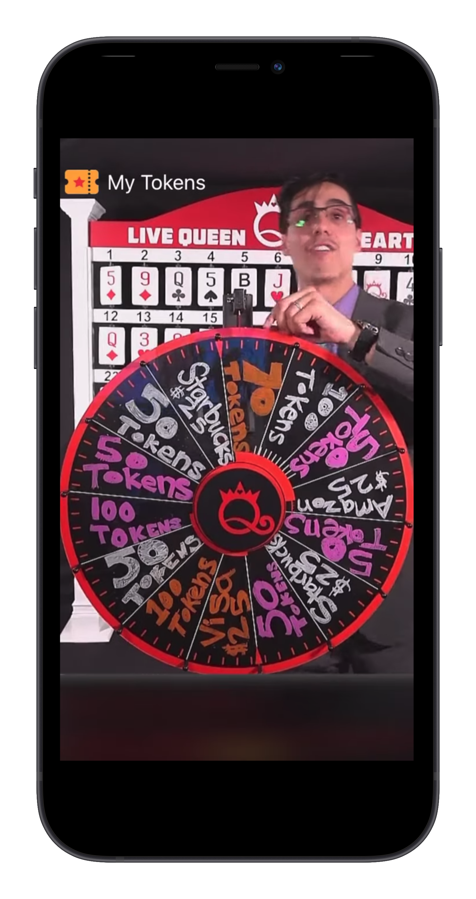

Live Queen Of Hearts
The story behind app
Users can watch and play in a live Queen of Hearts game show using the Queen of Hearts mobile application. On
Sundays and Wednesdays, the show would air at 7.30 p.m. and 9.00 p.m. (GMT-7) in the United States. Sweepstakes
drawing in real time! On the board, 55 cards were put at random. One token will be drawn for each drawing in the
hopes of uncovering a card. Find the Queen of Hearts and you'll be the big winner! Each week that the Queen of
Hearts isn't revealed, the jackpot grows! WIN a PRIZE if you find a Joker, other queens, or a BONUS card! Bonded
and Bonded.


The user must earn tokens by watching advertising from the ad network, which are primarily Google AdSense Unity
ads. Facebook ads and Tapjoy There is also an option for customers to earn tokens by making in-app purchases.


The game logic was that it was scheduled every thrice a week for 5 to 10 minutes, during which time a live anchor
came to the app and started the game. While the game was running, users could put the tokens they earned into the
live game, which were provided sequentially by token numbers. Once a user added more than 5 tokens, they had the
option of selecting one card from 52 cards.
When the time limit for contributing tokens to the live game has passed, new entries are no longer allowed to add
tokens. And a random number generator with a flip clock animation that selects one number from the total tokens as
the winner. This is all happening live on the show where users can chat with other users in real-time here we are
using firebase realtime database once the token number is selected the owner for that token notifies you that your
token number has been selected please select a card from 52 cards that are physically on the show which lens uses
has to guess the queen of Hearts card to get the first price even if the user is not guessing who’s also rewarded
with some part of real money.


There are multiple games within the live time such as roll their random number selector is called and selected at
random token and users for that he token number owner will notice that your token number has been selected for
rolling the spear where multiples prices are written on the part of Rolling spare where the user is rewarded as
that price.


Those who are selected card by putting more than five tokens into the game and selected at the end of the game A
bespoke card was called and a rolling animation was used to select a random card number from 52 cards and award
real money to all participants who correctly identified the correct card.
- Multiple ads network
- In-app Purchase
- Firebase integration
- Tracking Users Action and Performance using Logs
- (Deeplinking) Reffer and Earn
- Rolling jackpot
- WebRTC Live Streaming
- VLC Player
- OBS Engin
- Live Chat
Though, it wasn’t easy to launch the app as it was rejected 8 times by Apple due to copyright issues. There were
times I was completely
de-motivated but solving the reading habits through medium of my app kept me going.


We have developed from the verison 1.0 to latest 4.6 along with hundreds of testflight builds for testing.